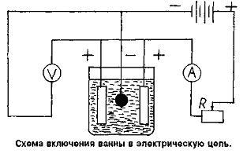

ИЗДАНИЕ 40
При изготовлении штампа вначале необходимо изготовить матрицу. Подходящим материалом для этого может послужить обыкновенный пластилин белого или желтого цвета. Из него необходимо как можно ровнее вылепить фигуру в виде срезанного конуса (диаметр широкой стороны немного больше диаметра планируемого штампа). Таким же образом можете изготовить заготовку любой другой формы. После этого заготовку положите минут на 15-10 в морозильную камеру холодильника.
Сделав эскиз штампа нужной конфигурации на бумаге, через копировальную бумагу переведите его на охлажденную заготовку, а затем острозаточенным карандашом, спичкой или другим тонким предметом аккуратно выдавите контур штампа на 1,5-2 мм в глубину. Следите за тем, чтобы все внутренние стенки штампа были ровными, иначе литеры на оттиске печати получатся с дефектами.
Полученную заготовку матрицы необходимо покрыть электропроводящим слоем. В данном случае - путем втирания в поверхность формы графита, тщательно растертого до порошкообразного состояния. Втирание производится мягкой кисточкой. Лишний, неприлипший графит необходимо сдуть.
Покрыв матрицу графитом и приложив проводники из медной проволоки диаметром около 1 мм, подготовленную заготовку оставляют в холодильнике на 30-40 минут, после чего сразу же погружают в гальваническую ванну, схема которой находится под током, чтобы не растворилась разделяющая пленка.
Сначала нужно сделать покрытие проводящего слоя меди при малой плотности тока в растворе:
Сернистая медь (медный купорос) - 150-200 гр.
Серная кислота - 7-15 гр.
Этиловый спирт - 30-50 гр.
Вода - 1000 мл
Рабочая температура электролита 18-25 "С. плотность тока 1-2 А/дм1".
После того, как вся поверхность затянется слоем меди, форму необходимо перенести в электролит, предназначенный для гальванопластических работ следующего состава:
Сернокислая медь - 340 в. ч.
Серная кислота - 2 в. ч.
Вода - 100 в. ч.
Температура раствора 25-28 "С.
Плотность тока 5-8 А/дм7.
Выдерживать до отложения меди толщиной 0,5-0,7 мм (около 20 мин.)
После металлизации матрицу необходимо очистить от пластилина и просушить.
Следующий этап - литье.
Для этого вполне подходит металл, температура плавления которого не превышает 400 "С (свинец, олово и т. п. вплоть до цинка). В данном случае остановимся на свинце. Этот металл легко плавится даже на газовой плите, к тому же не составит большого труда его найти. Перед заливкой металла в форму всю ее внутреннюю поверхность необходимо припудрить графитовым порошком.
Припудренную матрицу разогрейте до температуры, близкой к температуре плавления свинца. Это лучше сделать одновременно с плавлением металла. В холодной форме литье делать нельзя. Металл заливается непрерывной струей, после чего форме дайте полностью остыть.

ГАЛЬВАНИЧЕСКАЯ ВАННА
В качестве ванны можно использовать, например, корпус от старого аккумулятора с удаленными внутренними перегородками. Из толстой медной проволоки необходимо сделать поперечные перекладины, из которых две служат для подвешивания медных пластин (анодов), а третья для омедняемого предмета. Анодные пластины включаются между собой параллельно и присоединяются к клемме ( + ) источника питания. Важным условием металлизации является чистота электролита. При появлении мути или осадка электролит необходимо профильтровать. В качестве источника тока можно использовать выпрямитель напряжением 6-12 в, питающийся от сети переменного тока 127-220 в или автомобильного аккумулятора. К схеме необходимо подключить амперметр и вольтметр. Если поверхность матрицы менее 0,5 дм', лучше использовать миллиамперметр на 500 мА. Сопротивление реостата должно быть порядка 8-10 Ом, чтобы можно было изменять ток в пределах долей ампера. При сборке электрической цепи ванны, важно не спутать полюса у выпрямителя или аккумулятора, т. к. аноды должны быть обязательно подключены к положительному полюсу, а омедняемый предмет к отрицательному. Ровное покрытие внутренних полостей матрицы медью зависит от величины тока, не превосходящей известного предела и зависящей от площади его поверхности. Например, если норма плотности тока равна 0,5 А на дм'и общая площадь предмета около 0,5 дм', то ток не должен превышать 0,5 х 0,5 = 0,25 А. При большем токе медь будет откладываться не прочным, легкоотделяющимся слоем.
Матрица должна погружаться в ванну под напряжением. Если металл откладывается в полостях матрицы неравномерно, значит, либо металлизируемая поверхность матрицы находится под углом к аноду, либо в ванне недостаточная плотность тока.
Таким способом можно изготавливать печати, штампы, экслибрисы и т. п. практически любой конфигурации.
Гальванопластические операции лучше проводить в двух ваннах, чтобы не прерывать процесс. Весь процесс изготовления штампа при наличии необходимых устройств занимает не более 3,5 часов. Рукоятку штампа лучше отливать одновременно со штампом.
Уникальные издания.